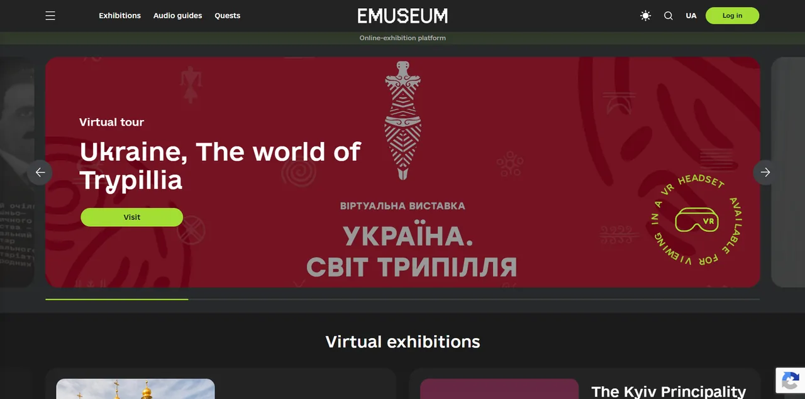
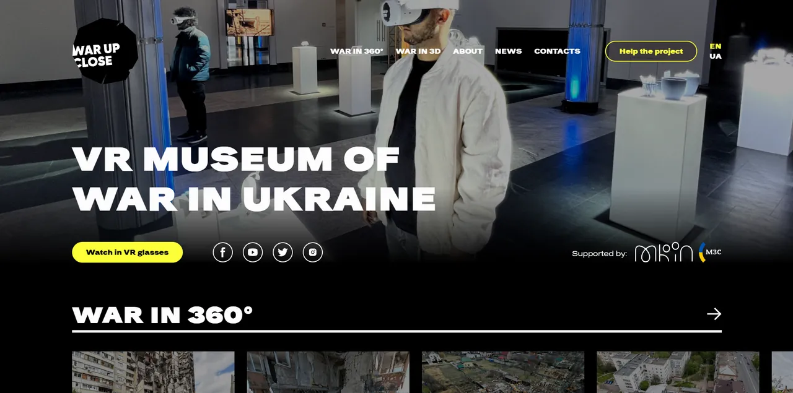
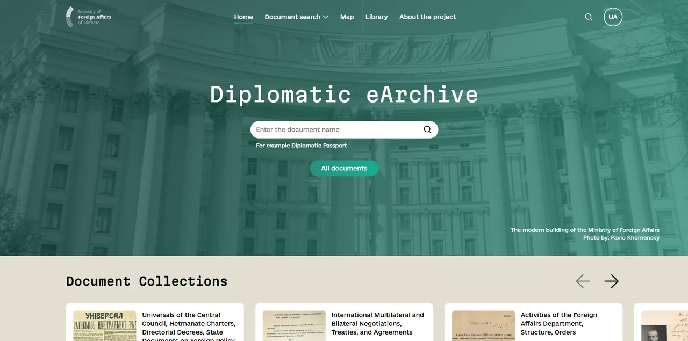
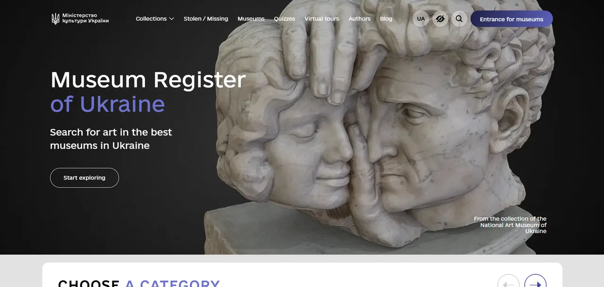
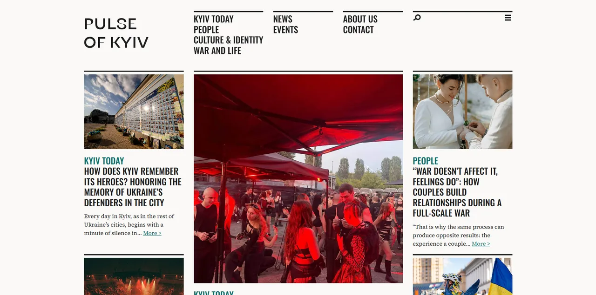
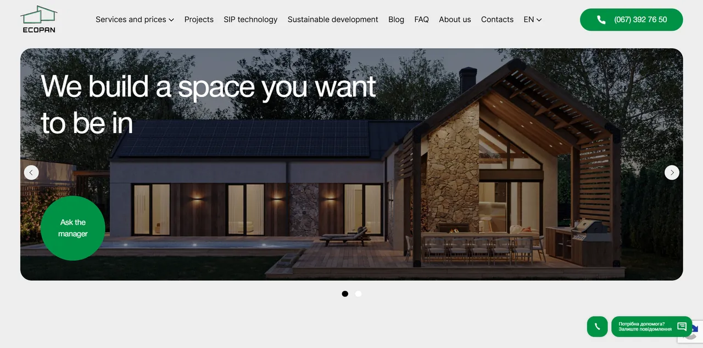

I build responsive, fast and maintainable interfaces for media, cultural, tourism and corporate websites. For the last five years I have been part of the Jam Development web studio, turning designs into live WordPress sites in two or three languages.
Projects where I handled the front-end: layout from design, responsive and cross-browser behaviour, interactive UI and WordPress theme integration.

A platform for virtual exhibitions and digital museum resources, letting people explore art and cultural heritage from anywhere. Bilingual interface on WordPress, with separate sub-sites for individual museums and artists.
My part: layout of the platform and museum sub-sites, WordPress integration, page-load performance, audio-guide and QR-tour pages.

A platform that shows the consequences of the Russian invasion through VR tours and 3D models of destroyed buildings. It includes static sections, a blog and a separate VR war museum viewable in VR headsets.
My part: responsive layout, embedding of VR and 3D content, WordPress theme work.

A portal of the Ministry of Foreign Affairs of Ukraine with digitised documents of Ukrainian diplomacy, launched together with UNDP.
My part: layout development, responsive implementation, performance optimisation for document-heavy pages.

An online portal of the Ministry of Culture of Ukraine for the national Museum Fund of Ukraine.
My part: website layout, responsive layout, loading optimisation.

An independent bilingual media outlet about the people, culture, work and everyday life of Kyiv, for local and international readers. Built with a strong focus on content structure, navigation and visual presentation of stories.
My part: responsive layout, article and archive templates, WordPress integration so the editorial team publishes on its own.

A trilingual site for a company that builds energy-efficient smart houses. It has a catalogue of houses with filters and comparison, a form that gives an estimated house price and consultation requests.
My part: layout, responsive implementation, interactive UI (catalogue filters, price form), WordPress integration.
Layout, new sections, redesigns and ongoing support at Jam Development.
Open to front-end roles
Marian Bovtach · Front-End Developer